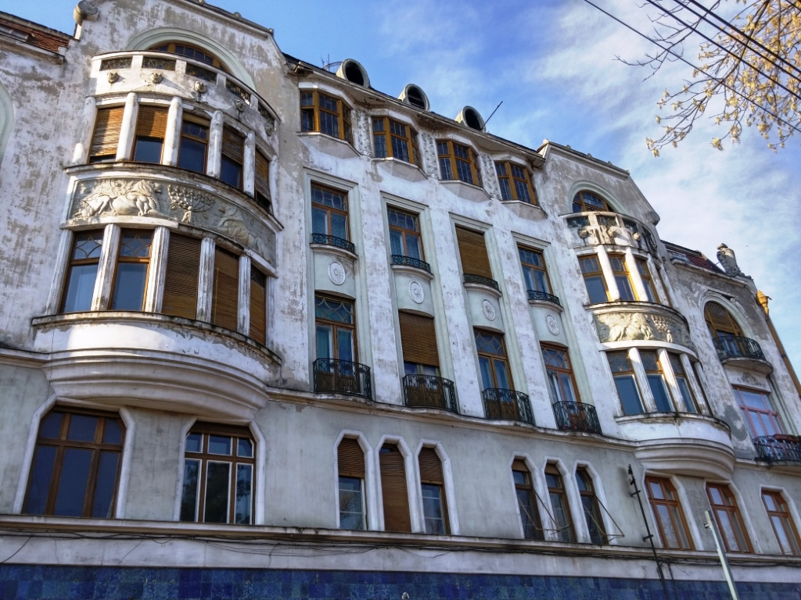

Palatul Ulmann
Descriere
Palatul Ullmann situat pe Strada Piata 1 Decembrie, a fost proiectat de arhitectul local Ferenc Lobl in anul 1913 și este una dintre puținele clădiri non-religioase din Oradea care ilustrează în mod evident apartenența la credința evreiască.
Este o cladire impozantă, simetrică și frumos proporționată, care cuprinde un parter înalt, placat cu plăci de faianță verde-albastruie și trei niveluri de locuințe, ultimul fiind mansardă.
În decoraţia exterioară a faţadei se pot descifra elemente caracteristice artei sacre iudaice: menora (sfeşnicul cu şapte braţe) străjuită de doi lei precum şi de numeroase motive florale şi geometrice.
Pentru comunitatea evreilor, Palatul Ullmann este încărcat şi de amintiri dureroase legate de cel de-al doilea război mondial, acesta făcând parte din perimetrul ghetoului. După război, Palatul Ullmann a redevenit ceea ce fusese înainte, un bloc de locuinţe, iar la mansardă s-au amenajat ateliere pentru artiştii plastici profesionişti.